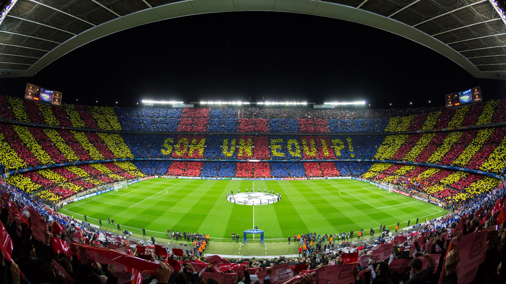
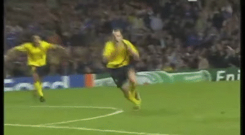
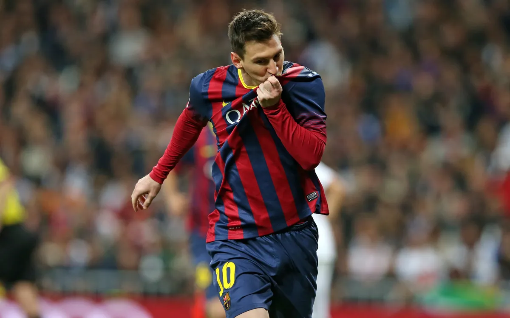
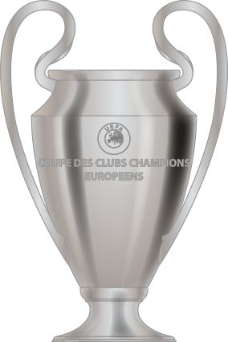
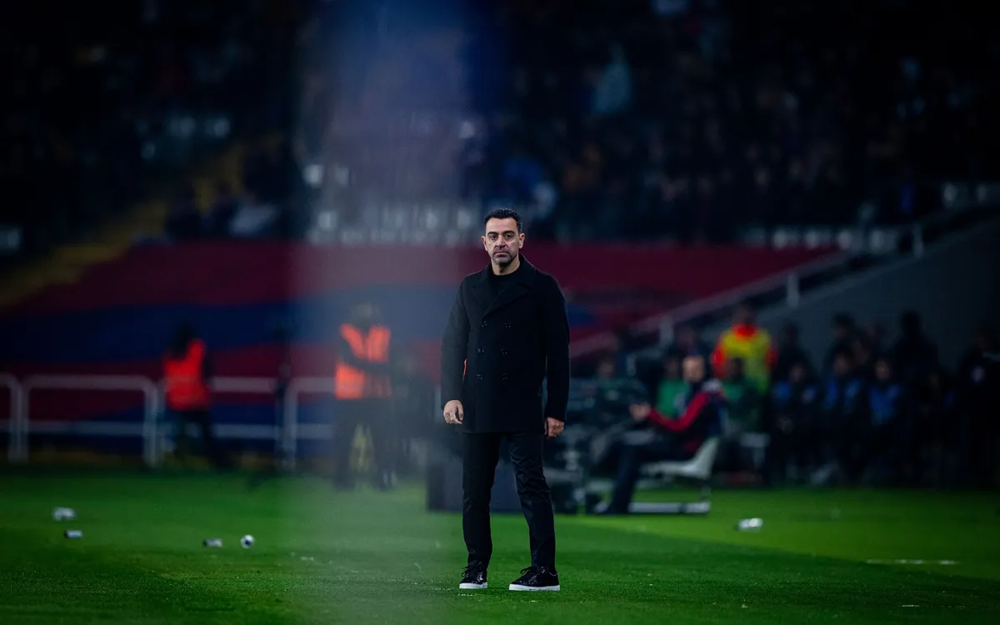
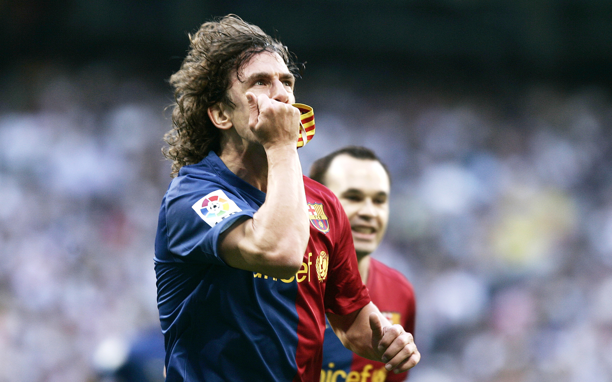
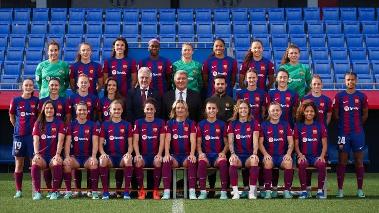
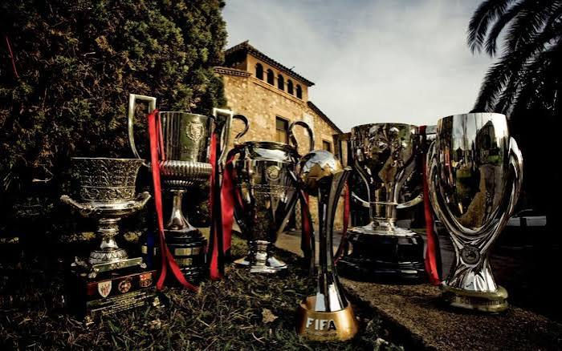
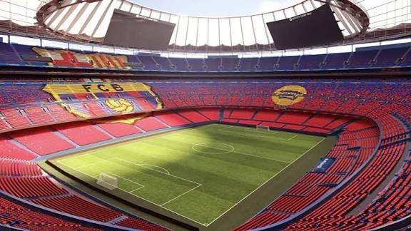

Símbolos del Club
El corazón del barcelonismo se sustenta en sus símbolos más universales: nuestro estadio histórico y el escudo que nos representa por todo el mundo.


Momentos Inolvidables
En esta sección repasamos los instantes más mágicos, las celebraciones épicas y los trofeos que han forjado la leyenda de nuestro club en la historia del fútbol mundial.



Filosofía y Leyendas
El estilo de juego único y los referentes que han marcado época, desde el compromiso de nuestros capitanes hasta los éxitos históricos del primer equipo y el imparable Barça Femení.




Mapa Interactivo del Estadio
Explora los rincones de nuestra casa haciendo clic en las distintas zonas de la imagen.

Momentos Audiovisuales
Revive el ambiente de nuestro estadio con este vídeo, que incluye subtítulos para no perder detalle.
Contenido sobre el Club
Disfruta de nuestro contenido audiovisual destacado y descubre cómo llegar a nuestro templo futbolístico.
Mejores momentos
Si no puedes visualizar este reproductor, accede al vídeo directamente en YouTube.
Ubicación del Estadio
¿Problemas para cargar la ubicación? Abre el mapa alternativo en Google Maps.
Aquí tenemos uno de los momentos más tristes de la historia del Barça, la despedida del mejor jugador del club y de la historia del deporte.
Si no puedes visualizar este reproductor, accede al vídeo directamente en YouTube.